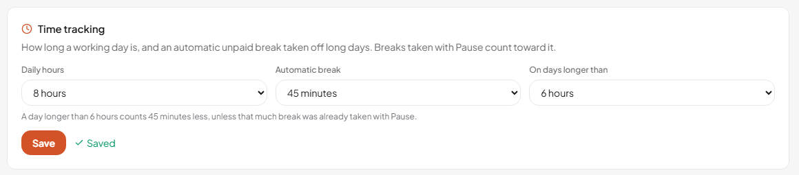
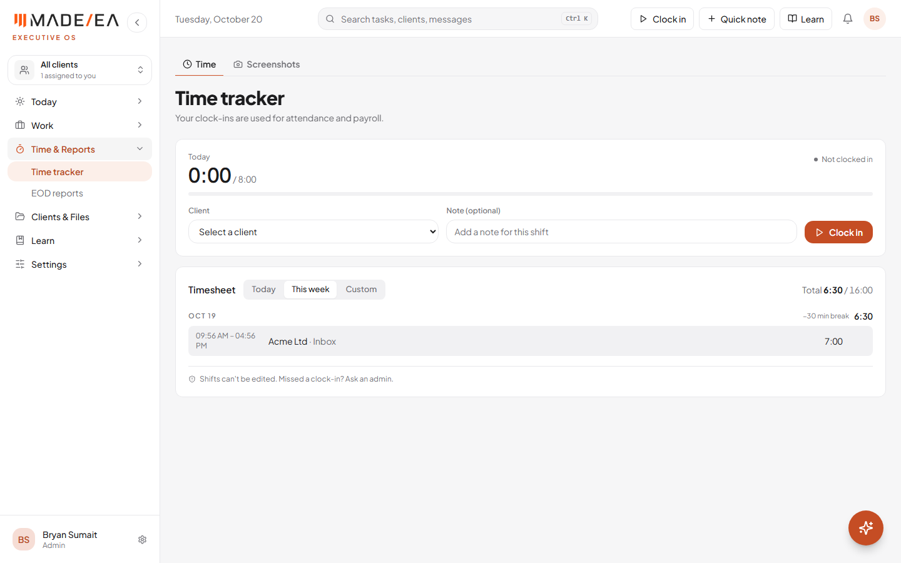
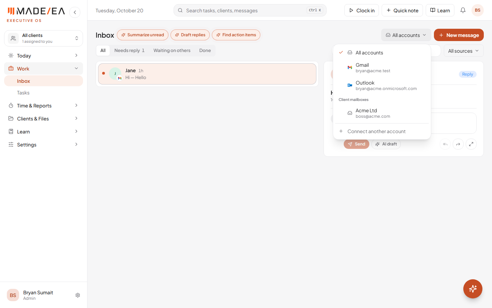
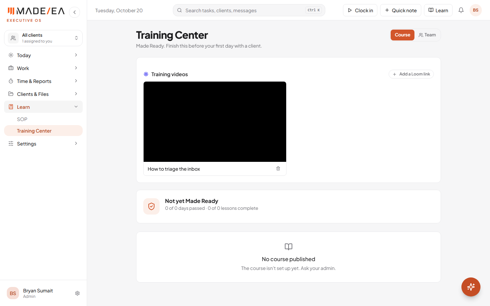
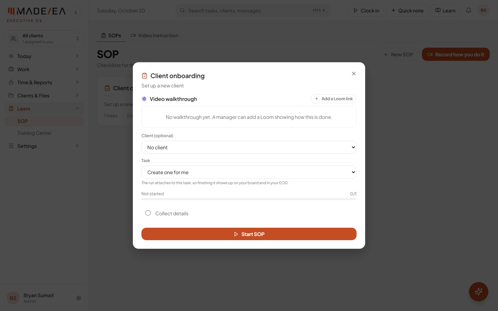
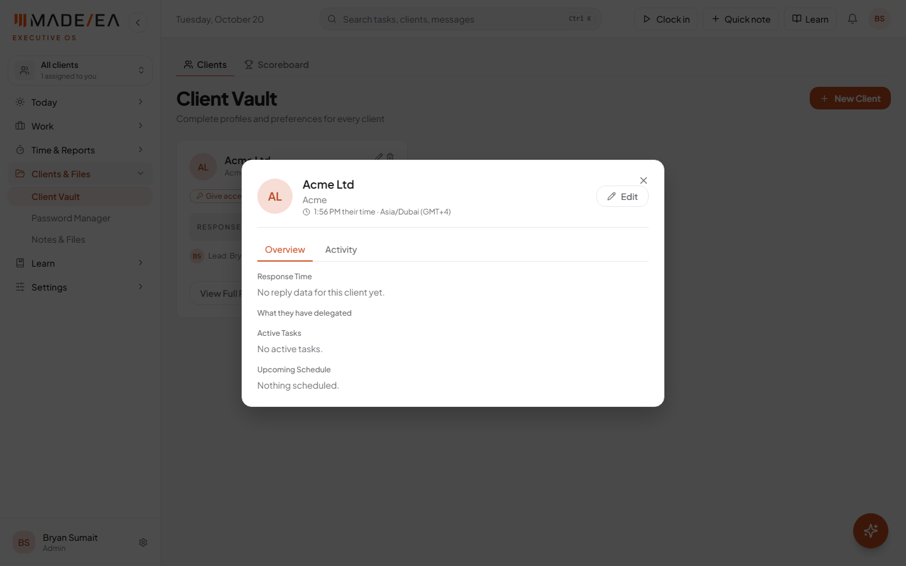
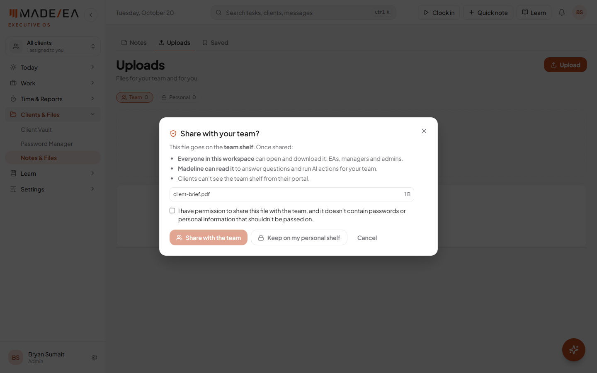

Everything from the 19 October team meeting under EOS Platform Development is done and live at hub.madeeas.com: an automatic break on the time tracker, switching between email accounts, Loom training videos in Learn, client time zones, and a permission check before files are shared with the team. The test-account invites, the notes for FJ's demo video, and the website chatbot are covered below.
Work done 20 October 2026Previous report 19 OctoberStatus Live
The time tracker already had clock-in, clock-out and screenshots. The missing piece was deduction: an unpaid break taken off long days automatically, so nobody's hours include a lunch they didn't log.
Set by an admin on a new Time tracking card in the Admin panel: the daily hours, the length of the automatic break (off, 15, 30, 45 or 60 minutes), and the length of day it applies to (for example, longer than 6 hours).
Breaks taken with Pause count toward it. Someone who already paused for 30 minutes isn't charged another 30.
The timesheet shows it plainly: each day shows "−30 min break" beside its total, so the deduction is never hidden.

Admin panel: the break rule, explained in one line under the settings. Test account.

Timesheet: a 7-hour day counts as 6:30 after the 30-minute break. Test account.
Why a set break, not idle trackingThe Hub can only see activity inside its own tab, not in Gmail, Sheets or a client's tools. Taking time off for "idle" minutes would cut hours an EA really worked, so the deduction is a clear, fixed break rule instead.
2Live
Inbox: switch between email accounts
A new account switcher at the top of the Inbox, beside New message:
All accounts, or just your Gmail or Outlook, each shown by its address.
Client mailboxes that clients have shared with their EA, in the same list.
Connect another account at the bottom, which goes to the Integrations page.

Account switcher in the Inbox. Test account with sample addresses.
One limit to knowEach person can connect one Gmail and one Outlook account. Connecting two Gmail accounts to the same person would need a bigger change to how the Hub stores sign-ins, and can be added later if it's needed.
3Live
Learn: Loom training videos and SOP walkthroughs
Training videos at the top of the Training Center. Videos play right on the page, without leaving the Hub.
A video walkthrough on every SOP, shown when the SOP is opened, so the checklist and the "how" sit together.
Managers and admins add them by pasting a Loom link. Anything that isn't a Loom link is turned away. Once the Loom app ID is added (see What's next), they can also press Record a Loom and the video is added automatically.
Training videos is also in the header's Learn menu.
The Hub's security settings were updated so Loom's player and recorder are allowed to load. Without this, Loom videos would have been blocked.

Training Center: training videos. Test account; the player is blank because the test uses a made-up Loom link.

SOP: the video walkthrough above the checklist. Test account.
4Live
Client time zones
A time zone field when a client is added or edited in Client Vault, with a Use mine shortcut.
The client's local time on their profile, for example "1:56 PM their time · Asia/Dubai (GMT+4)", so the EA knows at a glance whether it's a good moment to message them.

Client profile: their local time under their name. Test account.
5Live
Permission check before sharing files with the team
Before a file goes on the team shelf, the Hub now asks first. It explains who will see it (everyone in the workspace, and Madeline, but not clients), and the person must tick that they have permission to share it and that it holds no passwords or personal information. They can also keep it on their personal shelf instead, or cancel.

Share with your team? Share stays off until the permission box is ticked. Test account.
6Ready to send
Test accounts and notes for FJ
Test-account invites (due by 10:00 AM, 21 October): created from the Admin panel's "Add a team member". The Hub doesn't email invites, so each person gets their address and starting password in a private message, and changes the password after signing in. Anyone who already has an account gets a new password instead of a second account.
Feature notes for FJ: written and ready to send. They follow an EA's day in eight short sections (Home, Madeline, Inbox, Tasks, Routines, Time tracker, Learn, then the client portal), each with what to show and one line to say, plus what to keep off screen. About 3 to 4 minutes in total, recorded on a test account.
7Needs the Voiceflow login
Website chatbot (Voiceflow)
A check of the live madeeas.com site found that the chatbot's code is no longer on the website at all. The page and every script it loads were checked: the only outside widget left is the booking calendar. So renewing the Voiceflow plan won't bring the chat bubble back on its own. Two steps are needed:
Renew the Voiceflow plan on the account the chatbot was built in, then test the agent inside Voiceflow and publish it.
Add the chatbot's code back to the website: copy Voiceflow's web chat installation code and place it on the site, then publish the site and test the chat in a private window.
Needed from PrinceWhich email the Voiceflow account is under, and who can update the website's code, or access to it so we can add the chatbot back and test it.
What's next
Test accounts sent before 10:00 AM on 21 October, and the notes sent to FJ with a test login.
Voiceflow: the account email and website access, then the chatbot back on madeeas.com.
Loom app ID added in Vercel, so "Record a Loom" works on the Integrations page, in the Training Center and on SOPs.
Set the break rule in Admin panel → Time tracking. It's off until an admin picks a break length.